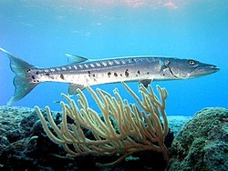

This is the first paragraph of my first web page.
This is the second paragraph of my first web page.
Fish are gill-bearing aquatic craniate animals that lack limbs with digits. They form a sister group to the tunicates, together forming the olfactores. Included in this definition are the living hagfish, lampreys, and cartilaginous and bony fish as well as various extinct related groups. Tetrapods emerged within lobe-finned fishes, so cladistically they are fish as well. However, traditionally fish are rendered paraphyletic by excluding the tetrapods (i.e., the amphibians, reptiles, birds and mammals which all descended from within the same ancestry). Because in this manner the term "fish" is defined negatively as a paraphyletic group, it is not considered a formal taxonomic grouping in systematic biology, unless it is used in the cladistic sense, including tetrapods.
Fish are gill-bearing aquatic craniate animals that lack limbs with digits. They form a sister group to the tunicates, together forming the olfactores. Included in this definition are the living hagfish, lampreys, and cartilaginous and bony fish as well as various extinct related groups. Tetrapods emerged within lobe-finned fishes, so cladistically they are fish as well. However, traditionally fish are rendered paraphyletic by excluding the tetrapods (i.e., the amphibians, reptiles, birds and mammals which all descended from within the same ancestry). Because in this manner the term "fish" is defined negatively as a paraphyletic group, it is not considered a formal taxonomic grouping in systematic biology, unless it is used in the cladistic sense, including tetrapods.